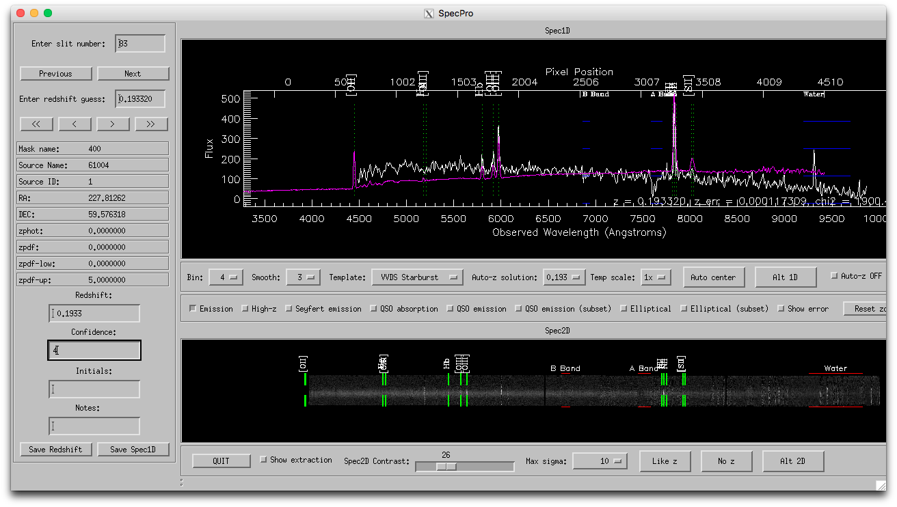

For general information about Binospec at the MMT, visit the Binospec preliminary information page.
setenv SPECPRO_DIR /Users/bjw/idl/specpro
setenv IDL_PATH :+${SPECPRO_DIR}/code:$IDL_PATH
setenv IDL_PATH :+${SPECPRO_DIR}/external:$IDL_PATH
setenv SPVIEW ${SPECPRO_DIR}/templates
but replace "/Users/bjw/idl/specpro" with the directory where you
installed specpro. If you use bash, use export SPECPRO_DIR=... instead
of setenv.
convert_binospec_to_specpro, 'obj_counts_slits_extr.fits', 'obj_counts_slits_lin.fits', outdir='specfiles'substituting the appropriate filenames as needed. This will make a 1-d file, 2-file, and info file for each slitlet (it's a lot of files) in the subdirectory. If you put the convert_binospec_to_specpro.pro file in the current directory, or if you get an undefined procedure error when running it, compile it first with the IDL command:
.com convert_binospec_to_specprothen run the convert_binospec_to_specpro command. As of Dec 2018 there is a new version on github that compiles all the subroutines when you run it, to avoid this undefined procedure error.
cd,'specfiles' device, decomposed=1 specpro_bino, 1, /basicYou only need to do the file conversion once per dataset, and can run then specpro for as many sessions as you like. You may get an error message after 'device, decomposed=1'; this message can be ignored.
That describes how to run Specpro. You can read the Specpro documentation for what the various controls do. Below is a screenshot of Specpro in "basic" mode with a redshift fit to a Binospec spectrum, and below the screenshot is an introduction to the Specpro workflow that I find useful.

Below the 1-d spectrum window, set bin=4, smooth=3. click "Emission" box to show location of common emission lines. You may also find "Elliptical (subset)" useful, and "QSO emission (subset)", "High-z", or "QSO absorption" useful depending on what types of objects are in your data.
Below the 2-d spectrum window, you can tick "Show extraction," but the extraction window is not easily computed from the Binospec reduced data and tends to default to the middle of the slitlet even if that's not the true location, so it can be misleading.
Often a given template will have multiple solutions that are all pretty close in redshift and you'll have to change to a different template to get some variety. There are some general tendencies, eg VVDS Starburst or Blue Galaxy fit strong emission line galaxies, VVDS Spiral or Green Galaxy are useful for galaxies with some emission and absorption lines, etc. I find that VVDS Elliptical and Red Galaxy impose a very old template with a strong red tilt; depending on your objects, you might find the S0 template more useful for absorption lines.
Important: frequently, the template fits are affected by low quality data or artifacts at the ends of the 1-d spectrum and will fail to yield a redshift. It helps a lot to zoom in on the spectrum by clicking and dragging in the 1-d plot window to eliminate the spectrum ends, then choosing a template from the pull-down menu to redo the fit. The fit will only use the x range of data that is visible in the 1-d plot window. If you zoom in too much, use the "reset zoom" button to get back to the original range. I am working on modifying the fit to ignore the very ends of the spectrum to mitigate this problem.
If you want to judge whether the features the template is fitting are real, try clicking and dragging over the feature in the 2-d plot window to open a zoom in window, e.g. at the location of emission lines. This will also recompute the contrast for the zoomed in window, helpful when the full 2-d plot has a bad stretch due to artifacts (which is pretty common).
If you didn't find a redshift that you liked, you can click "No z" at bottom and it will set redshift=-99 and confidence=0. I prefer to set these to z=0 and confidence=1, reserving confidence=0 for uninspected.
You can type any comments you like in the "Notes" box. These will appear in the output file.
After you've chosen a filename, in that session specpro_bino will remember the filename and auto-save your file on every next slit, previous, jump to slit number, or quit event. You only have to click "save redshift" once per session. This is a change from original specpro, to make it less likely that you'll lose work.
The format of the output file is an ASCII file with columns:
masknum slitnum ra dec catnum z zqual commentsBecause it appends, you may find duplicate lines if you re-opened the file, etc. If you eliminate duplicates and sort the file in slit number order, it should match the order of the slits/objects in the table that Binomask presented when you designed the mask.
Please contact Benjamin Weiner, bjw@mmto.org, for further information or questions.